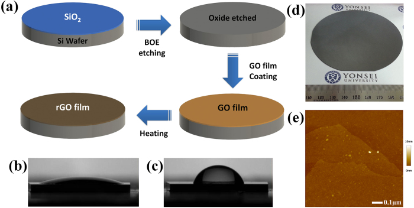

Overview
This study by researchers at Yonsei University and the Institute of Chemical Technology, Mumbai, co-authored by Jungmok Seo (then at the Nanobio Device Laboratory, School of Electrical and Electronic Engineering, Yonsei University), who now leads the BLISS Lab at Yonsei University, used silicon itself to reduce graphene oxide (GO). GO spray-coated onto an oxide-etched silicon wafer was reduced while the film formed, and the 2 nm thick silicon-reduced GO (srGO) film had a sheet resistance of 3.54 KΩ/square, compared with more than 2 MΩ/square for a 5 nm GO film.
Background
Solution processing of GO is suited to low-cost mass production of graphene films, but GO is an insulator and must be reduced with chemical reducing agents or high temperature annealing; many of the chemical reductants are harmful and toxic and can leave impurities. Films grown by chemical vapour deposition (CVD) avoid this step but require high temperature and transfer from copper or nickel catalysts, which can cause defects and leave poly(methyl methacrylate) (PMMA) residue.
Design and approach
Bare silicon is easily oxidized, so silicon can remove oxygen groups from GO while itself turning into silicon oxide. Two forms of silicon were used. CVD-grown silicon nanosheets (SiNSs), whose two-dimensional shape increases contact with GO sheets, were stripped of native oxide in 1:6 buffered oxide etch (BOE), mixed with GO solution at 80 °C for 2 hours and then removed in 2 M NaOH. For films, a silicon wafer was etched in 1:6 BOE to expose bare silicon, and GO was spray-coated onto the heated wafer so that film formation and reduction occurred together. The authors propose, as a hypothesis, that Si-H bonds formed during etching drive de-epoxide, de-carbonyl and de-hydroxyl reactions.

The figure shows graphene oxide being coated onto oxide-stripped silicon and reduced by heating, alongside observations of the resulting film.
Su Chan Lee, Surajit Some, Sung Wook Kim et al. “Efficient Direct Reduction of Graphene Oxide by Silicon Substrate”. Figure 1. DOI: 10.1038/srep12306. CC BY 4.0. Figure content is unchanged.
Source figure and caption ↗ · DOI: 10.1038/srep12306 ↗ · CC BY 4.0 ↗
How it was evaluated
Reduction was examined by X-ray photoelectron spectroscopy (XPS), X-ray diffraction (XRD) of graphite, GO and srGO powders, UV-visible absorption, Raman spectroscopy and Raman mapping, scanning electron microscopy, atomic force microscopy (AFM) and four-probe sheet resistance. Films on non-etched wafers served as controls, the heating temperature was varied from room temperature to 140 °C, and NaOH was used in place of BOE to test whether the etchant caused the reduction.
Key results
In powders reduced with SiNSs, the C-O and C=O components of the C1s spectrum decreased markedly and the C/O ratio rose from 2.12 for GO to about 9.32 for srGO, with no contaminants such as sodium detected. The XRD peak moved from 10° for GO to 19.8° for srGO (graphite: 26°), indicating a smaller interlayer distance after removal of oxygen groups. The UV-visible absorption peak shifted from near 230 nm to around 270 nm, with a mean of 267 nm and a standard deviation of 0.7942 across srGO solutions, and shifted further to the red with more SiNSs. The Raman intensity ratio ID/IG increased from 0.80 to 1.11.
Removing the native oxide changed the wafer's water contact angle from 20.7° to 119.7°. On a 4-inch wafer, the srGO film was uniform, 2 nm thick and had a root mean square roughness of 0.736 nm. The film on the etched wafer had an ID/IG ratio of 1.13, compared with 0.79 on a non-etched wafer, and showed a sharper 2D peak than GO. ID/IG increased with heating temperature up to 100 °C and then saturated, and Raman mapping showed a uniform ID/IG ratio over the film.
The srGO film had a sheet resistance of 3.54 KΩ/square at 2 nm thickness, compared with more than 2 MΩ/square for a 5 nm GO film. Etching the wafer with NaOH instead of BOE produced no significant change in the Raman spectrum, and XPS showed a SiO2 peak at 103.65 eV on the wafer after reduction, consistent with oxidation of silicon during the reaction.
Open questions
The authors note that the reduction mechanism of GO is not yet sufficiently understood, and the Si-H-mediated pathway is presented as a hypothesis rather than resolved experimentally.
Related research
Large-area ultrathin films of reduced graphene oxide as a transparent and flexible electronic material
Eda et al. reported a solution-based method for uniform and controllable deposition of reduced graphene oxide films from a single monolayer to several layers over large areas, with the thinnest films showing graphene-like ambipolar transistor behaviour. The present study focuses on the reduction step, using the silicon substrate in place of chemical reducing agents.
Abstract-based introductionRESEARCH NEWS
Research in the news
Sources used in this summary
This summary is based on the open-access full text and figure legends (PMC4648420); the Supplementary Information was not reviewed, and in the main text the Raman peak labels are interchanged (G at 1341 cm-1, D at 1573 cm-1) and the film heating temperature is given as 80 °C in one Methods subsection and 100 °C in another.